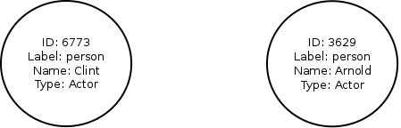
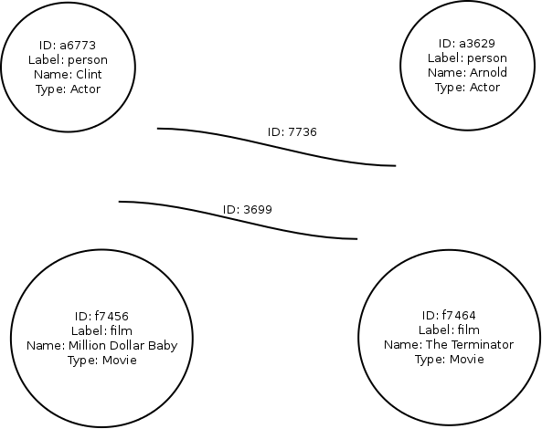
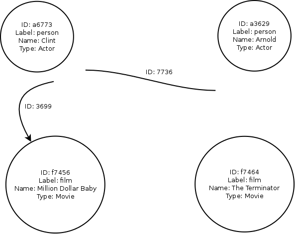
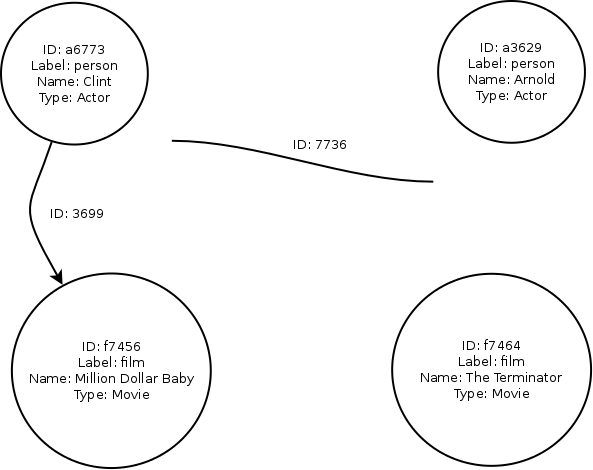
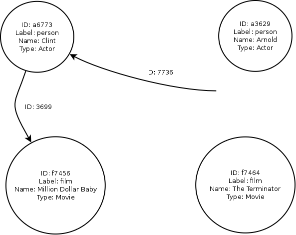
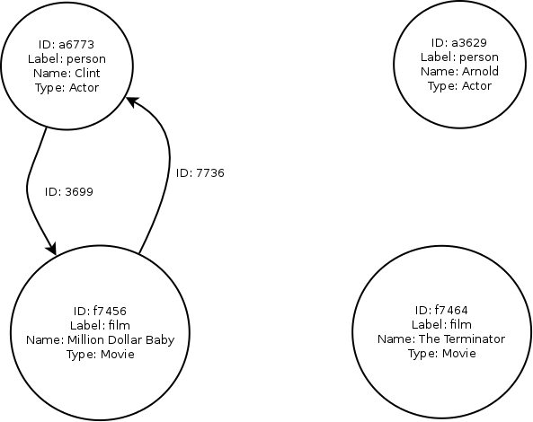

Getting started with the Graph Data Store
Graph Database Concepts
What is a graph database?
A graph database is a database that uses graph structures with vertices (also called nodes), edges (also called arcs or lines), and properties to represent and store data. This structure provides index-free adjacency. Structuring data in a graph database makes looking at the data set simple. Each element can be linked to other elements using one or more edges. Graph processing is called traversal. A traversal visits the elements (vertices and edges) in a graph one at a time in a specific order.
You don’t need to be an engineer to create a graph database. “If you can whiteboard it, you can graph it,” is the new motto. Team members (business analyst, developer, and DBA) can gather around a whiteboard to design a graph. With a whiteboard drawing, you can create a graph database and populate the database with properties and values. Because of the flexible schema, a graph can accommodate a wide range of properties.
Why would you use a graph database?
Today, organizations want to analyze huge amounts of data with complex relationships. A graph database is flexible and easy to query. Examining the complex relationships between vertices, properties, and edges can yield meaningful and valuable data. Graph databases can be used to produce recommendations, friends-of-friends, the shortest route, fraud detection and more. The following list shows other reasons why you might use a graph database.
- Analyze how things are interconnected.
- Analyze data to follow the relationships between people, products, and so on.
- Process large amounts of raw data and generate results into a graph.
- Work with data that involves complex relationships and dynamic schema.
- Address constantly changing business requirements during iterative development cycles.
- Because the data naturally fits a graph.
What is the structure of a graph database?
A graph database uses the structure of a property graph. Graph computing distinguishes between structure (the graph) and process (traversal). Traversal is the process of visiting the elements (the vertices and edges) in a graph, in a systematic fashion.
The following list describes the components of a graph database.
- Structure (the property graph)
- Graph – maintains a set of vertices, edges, and access to database functions such as traversals.
- Elements – vertices and edges are represented in JSON (JavaScript Object Notation).
- Vertices (also called nodes) – a document that represents people, businesses, accounts, or anything else you want to track, and additional fields added by the database.
- Edges (also called arcs or lines) - represents a connection or relationship between two vertices. Each edge contains a unique identifier, a start and end node, and a set of properties.
- Property – a string key associated with a value and attached to an element, such as a vertex or an edge.
- Process – use traversal to analyze the structure or graph. A traversal visits all the elements in a graph and checks and updates their values, usually in a specific order.
Using a Bluemix service
IBM Graph Data Store is a service provided within the Bluemix platform. As you develop your mobile or web application, you can use Bluemix services as needed, leaving you to focus on your application logic and design.
A full list of the available services is available.
There are three steps to using a Bluemix service:
- Create an instance of the service. Do this by requesting a new service instance.
- (Optional) Identify the application that will use the service. If your application is a Bluemix application, you can identify the application when you create the service instance. If your application is external, and is not a Bluemix application, you can leave the service unbound.
- Write code in your application that interacts with the service.
Configuring your application to interact with the Graph Data Store service
When you create an instance of a Graph Data Store service, you are provided with the details necessary for your application to interact with the service. The details are in JSON format.
In the following example, the data for each of the credential fields is abbreviated for convenience:
{ "credentials": { "apiURL": "https://gdsexample.stage1.ng.bluemix.net/graphs/686....", "username": "75e1...3b67", "password": "742f...b790" } }
If you are creating a Bluemix application,
these credentials are stored for you in the VCAP_SERVICES environment variable.
You should ensure that your application is configured to use:
- Graph Data Store endpoints, identifed by the
apiURLvalue. - The service instance username, identified by the
usernamevalue. - The service instance password, identified by the
passwordvalue.
With these configuration changes made, your application should be able to interact with your Graph Data Store instance.
Loading data into a Graph Data Store
Vertices
In IBM Graph Data Store,
a vertex is simply an object that has,
as a minimum,
an id and a label.
Optionally,
you can have some properties.
To be useful, a vertex must be connected to other vertices using edges.
In the following example,
there are two vertices,
both labelled as person,
and distinguished from each other by having unique IDs.
Each vertex also has some properties,
consisting of the name of the person,
and their job.

In Graph Data Store, you create vertices using the Vertex APIs.
Edges
An edge is a connection between two vertices.
In Graph Data Store, it is perfectly possible to have a bidirectional edge. This means that the edge describes a relationship in both directions between the connected vertices. However, for clarity and simplicity, it is often easier for you to consider an edge to be unidirectional. In other words, an edge goes from one vertex to another vertex. If you require an edge to go back to the first vertex, you would create and use a second edge.
In the following diagram, we have added two more vertices, and also created two edges, with the IDs 3699 and 7736, respectively. However, the edges are not yet connected to any vertices. In other words, we have not yet indicated how the edges help define relationships between any of the vertices.

Connecting two vertices using edges
First we define edge 3699 as being an incoming edge to vertex f7456.

Next we define edge 3699 as an outgoing edge from vertex a6773.

We now have a uni-directional relationship from an actor to a movie. Next, we need a similar uni-directional relationship from the movie to the actor. This time, we use edge 7736.
As before, we first define edge 7736 as being an incoming edge to vertex a6773.

Finally, we define edge 7736 as being an outgoing edge from vertex f7456.

In Graph Data Store, you create edges and connect them to vertices using the Edge APIs.
Creating a simple graph database using Graph Data Store
We now have enough background to explore how to create a simple graph database.
First,
we create the Clint vertex using the Vertex API:
curl http://<graphdatastore.bluemix.url>/vertices \ -X POST \ -H "Content-Type: application/json" \ -d '{"label":"person","Name":"Clint","Type":"Actor"}'
A successful result would be a JSON response similar to the following:
{ "requestId":"9b749024-cd52-40a6-b25d-a90c09239c64", "status":{ "message":"", "code":200, "attributes":{} }, "result":{ "data":[ { "id":4296, "label":"vertex", "type":"vertex", "properties":{ "Type":[ { "id":"1ll-3bc-2dh", "value": "Actor" } ], "Label":[ { "id":"t5-3bc-sl", "value":"person" } ], "Name":[ { "id":"17d-3bc-1l1", "value":"Clint" } ] } } ], "meta":{} } }
Notice that the IDs for the vertex and its three defined properties are each generated automatically.
We can then create the Million Dollar Baby vertex using a similar call:
curl http://<graphdatastore.bluemix.url>/vertices \ -X POST \ -H "Content-Type: application/json" \ -d '{"Label":"film","Name":"Million Dollar Baby","Type":"Movie"}'
Optionally, we can check which vertices are present in the graph database by using a simple GET call:
curl http://<graphdatastore.bluemix.url>/vertices \
-X GET
Now we can create an edge that connects the actor and the movie vertices, using the Edge API:
curl http://<graphdatastore.bluemix.url>/edges \ -X POST \ -H "Content-Type: application/json" \ -d '{"outV":"4296","label":"stars in","inV":"4216"}'
A successful result returns JSON similar to the following:
{ "requestId":"cf9a2633-9c5f-4a26-91cd-f3a409c1c6c2", "status":{ "message":"", "code":200, "attributes":{} }, "result":{ "data":[ { "id":"1zt-3bc-36d-394", "label":"stars in", "type":"edge", "inVLabel":"vertex", "outVLabel":"vertex", "inV":4216, "outV":4296 } ], "meta":{} } }
Bulk loading data into Graph Data Store
While individual vertices and edges can be created in a Graph Data Store by using the corresponding API calls, an alternative is to load all the data in one go using the Input/Output APIs.
The data can be provided in one of two formats:
- GraphML is an XML-based format.
- GraphSON is a JSON-based format, created as part of the Apache Tinkerpop work.
While both formats are supported in Graph Data Store, the GraphSON format is more familiar to those using JSON for their applications, and therefore is the format used in this documentation.
Example of GraphSON format data
{ "id":4216, "label":"vertex", "inE":{ "stars in":[ { "id":"1zt-3bc-36d-394", "outV":4296 } ] }, "properties":{ "Type":[ { "id":"1lb-394-2dh", "value":"Movie" } ], "Label":[ { "id":"sv-394-sl", "value":"film" } ], "Name":[ { "id":"173-394-1l1", "value":"Million Dollar Baby" } ] } } { "id":4296, "label":"vertex", "outE":{ "stars in":[ { "id":"1zt-3bc-36d-394", "inV":4216 } ] }, "properties":{ "Type":[ { "id":"1ll-3bc-2dh", "value":"Actor" } ], "Label":[ { "id":"t5-3bc-sl", "value":"person" } ], "Name":[ { "id":"17d-3bc-1l1", "value":"Clint" } ] } }
In the example GraphSON data,
you can see the two example vertices defined earlier in this topic:
the Actor called Clint and the Movie called Million Dollar Baby.
The two vertices are related by an edge with the automatically-generated ID 1zt-3bc-36d-394.
For the Actor vertex,
the edge is an outgoing edge outE.
For the Movie vertex,
the edge is an incoming edge inE.